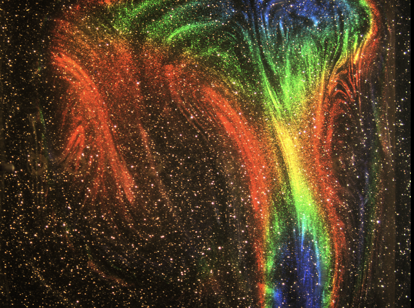
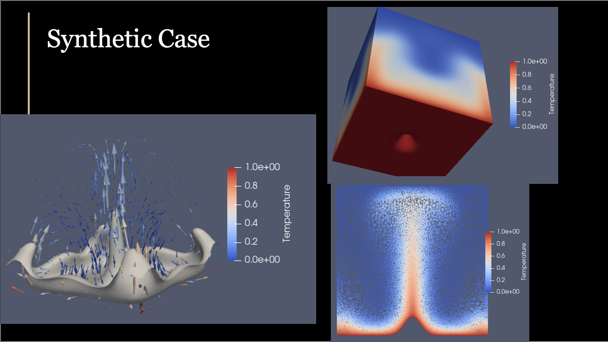
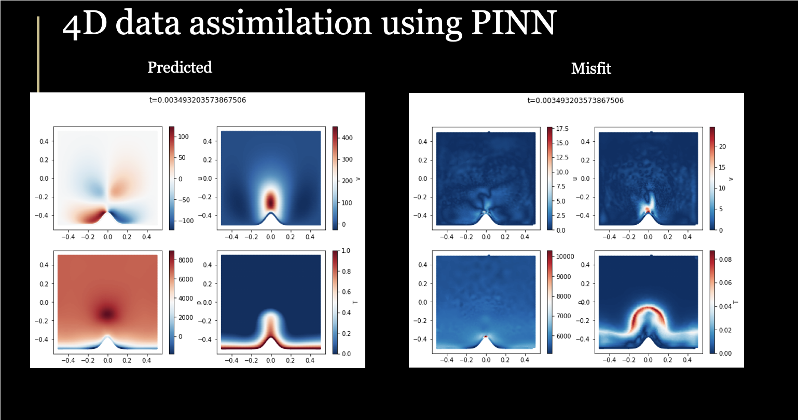

Experimental, Computational and Machine Learning Methods in Geophysics

I am also very interested in developing and applying novel methodologies, including both end-to-end and generalizable approaches to address various challenging problems in geophysics.
Specificlly, I focus on:
- State-of-the-art laboratory fluid dynamic experiments and analysis workflow tailored for viscous convection applicable to planetary interiors (Bao and Lithgow-Bertelloni 2024; Bao and Lithgow-Bertelloni Submitted; Bao and Lithgow-Bertelloni In preparation). They are based on real-world physics and especially suitable to investigate multi-scale flow.
- Digital twins of lab experiments based on a hybrid-adjoint method (Bao 2024). These fully quantified numerical models are tightly constrained by 4D lab measurements, but they further extend the results in space and time and even to unmeasured quantities.
- Machine learning and AI methods to analyze, simulate and invert complex geophysical systems. These include data mining from geophysical and geochemical data (Bao et al. 2022; Bao et al. 2024; Bao et al. Under review in Science), as well as forward and inverse modeling with physics-infomred neural networks (PINNs) (Bao 2024) and neural operators (Bao et al. In preparation).

